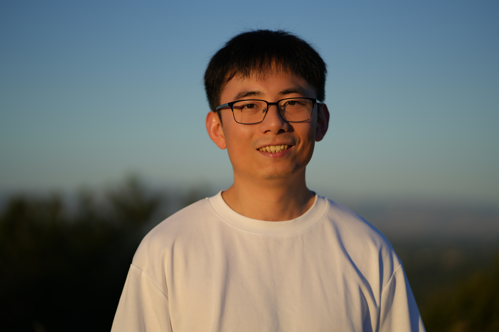
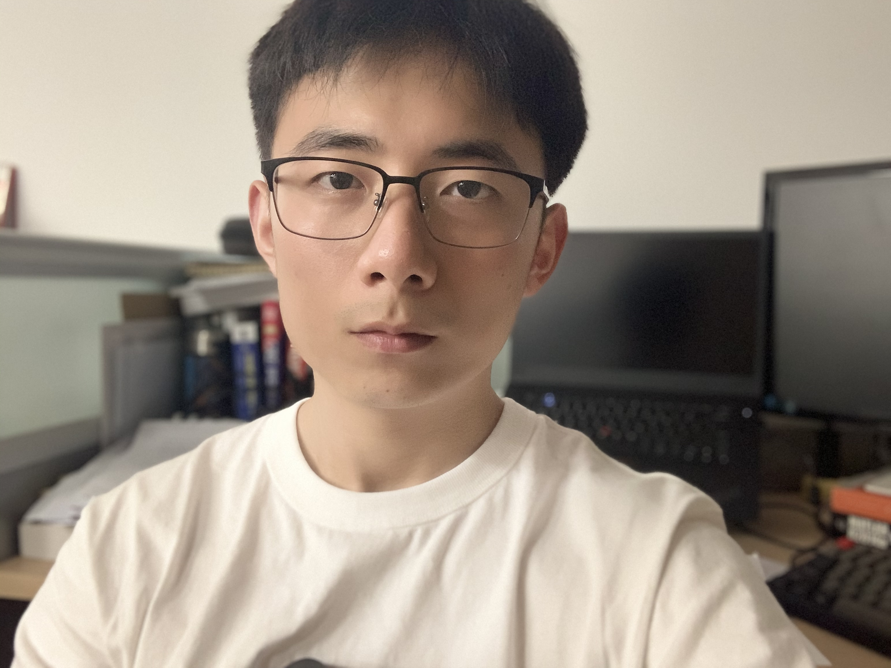
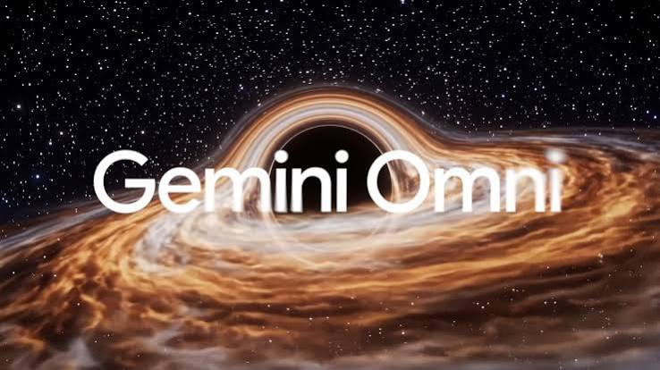
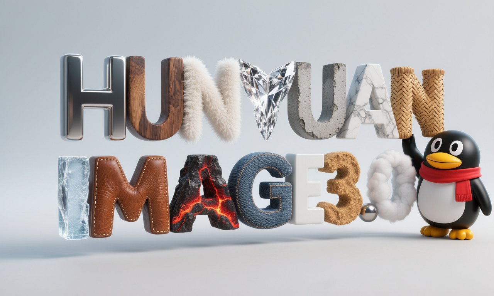
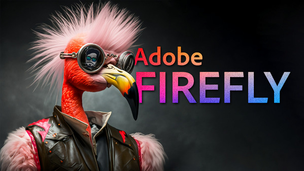
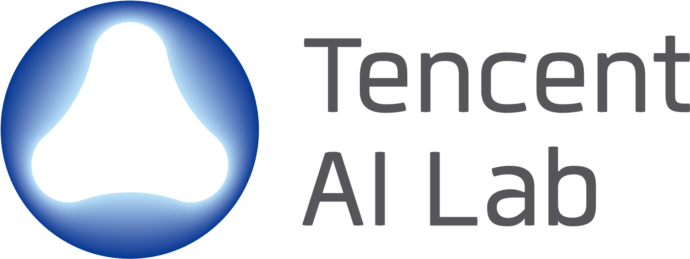
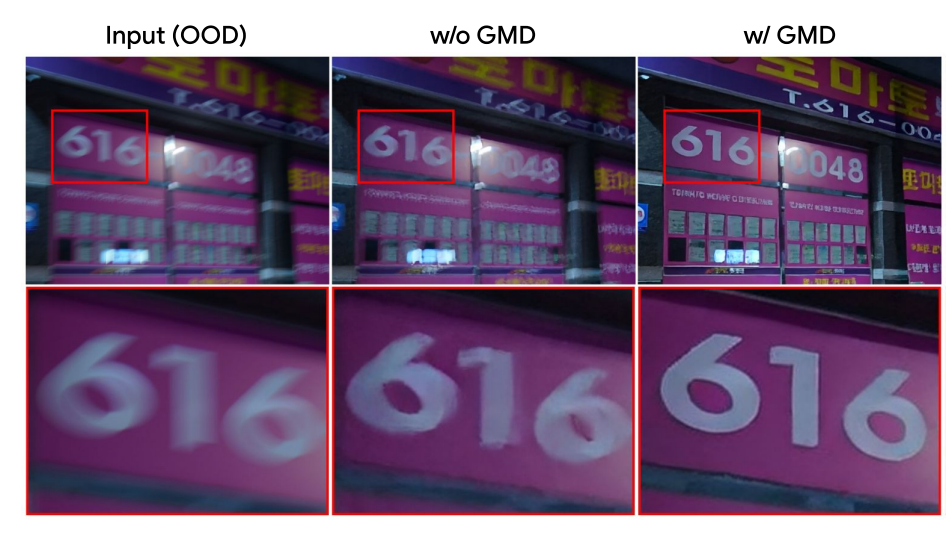
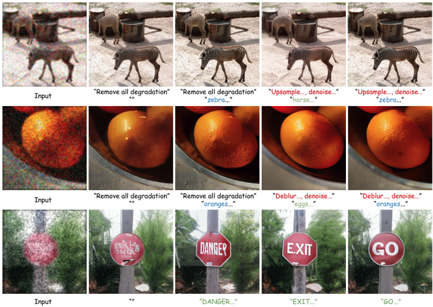
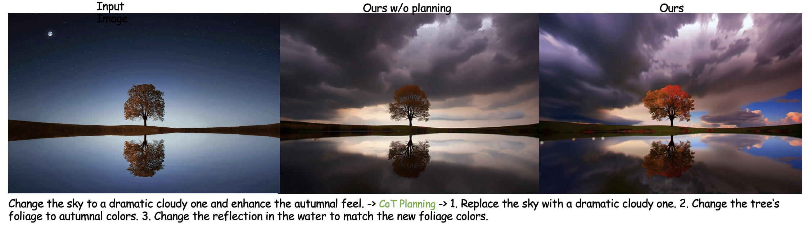
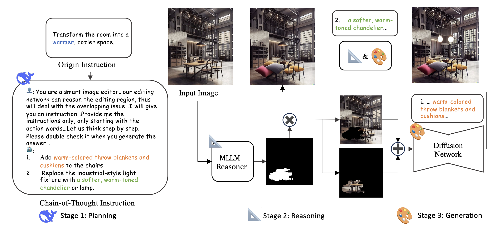

Chenyang Qi戚晨洋
I am a Research Scientist at Google, working on the Gemini Omni project, where I focus on real-time, interactive, high-resolution video generation under the supervision of Yael Pritch and Peyman Milanfar. Before Google, I was a Research Scientist at Tencent, training the diffusion–autoregressive model HunyuanImage 3.0.
My research lies in multimodal generative AI, especially image and video synthesis. I am interested in building AI systems that simulate our dynamic visual world with creative control, and bring real-time interactive experiences to human beings.
I received my Ph.D. from the Hong Kong University of Science and Technology (HKUST), advised by Prof. Qifeng Chen, and my B.Eng. in Electrical Engineering from Zhejiang University with a National Scholarship from Chu Kochen Honors College, advised by Prof. Wenyuan Xu.


News & Highlights View all →
- Jun 2026PaperGenerative Manifold Distillation (image restoration) is accepted by ECCV 2026.
- May 2026ReleaseGemini Omni Flash is released via the Gemini API, following its announcement at Google I/O 2026.
- Feb 2026PaperTea-Adapter (video control) is accepted by CVPR 2026 — see you in Denver!
- Jan 2026PaperFollow-Your-Motion (motion transfer) is accepted by ICLR 2026.
- Sep 2025ReleaseHunyuanImage 3.0 is open-sourced.
- Feb 2025PaperOne paper on image editing with planning and reasoning is accepted by CVPR 2025.
- Oct 2024MilestoneI received my Ph.D. from HKUST!
Research Projects and Products


Internships




Featured Publications View all →
Multimodal generative models for image and video synthesis. Full list on the Publications page or Google Scholar.


{kind=link}



Service & Awards
- Reviewer: CVPR, ICCV, ECCV, NeurIPS, ICLR, IJCAI, ACM MM
- Oral Presentation, ICCV 2023 (FateZero)
- National Scholarship, 2018 — Chu Kochen Honors College, Zhejiang University